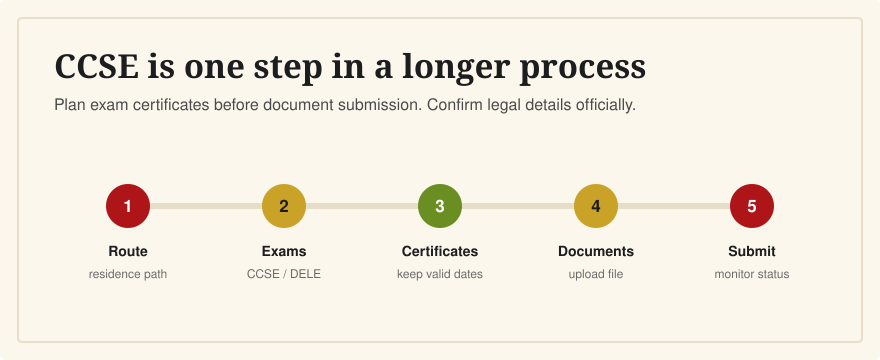

Timeline for Spanish Citizenship and the CCSE
Last verified: June 5, 2026
The CCSE is usually something to complete before submitting your Spanish nationality by residence application, but the full legal timeline depends on your individual case.

A practical order is: confirm your nationality route and residence requirement, prepare for CCSE and any required DELE exam, take the exams, gather documents, submit through the Ministry of Justice process, then monitor the application. This page is not legal advice.
Important Disclaimer
Spanish nationality is a legal process. This guide is a study-oriented overview for English-speaking residents in Spain, not legal advice and not a substitute for official Ministry of Justice guidance or professional advice. Requirements can vary by nationality route and personal situation.
Step 1: Confirm Your Route
The Ministry of Justice says nationality by residence requires legal, continuous residence in Spain for the required period immediately before the application, plus good civic conduct and integration. The exact residence period and documents are legal questions, so verify them officially.
Step 2: Plan CCSE and DELE
Instituto Cervantes explains that, in certain nationality cases, applicants must pass the CCSE and a DELE A2 or higher Spanish diploma. Some applicants may be exempt or may request a dispensation, depending on circumstances. Confirm before booking exams.
The official CCSE exam itself is in Spanish. If you study with English explanations, keep enough time to practice the Spanish question wording before the exam date.
The CCSE certificate is valid for four years from the issue date according to Instituto Cervantes. DELE diplomas have indefinite validity according to Instituto Cervantes DELE guidance.
Step 3: Take the Exams Before You Need the Certificate
CCSE results are normally communicated about 20 days after the exam, while DELE results take longer. Do not leave exam booking until the last week before you intend to submit documents.
Step 4: Submit and Monitor the Application
The Ministry of Justice electronic headquarters provides the nationality by residence application, document upload process, fee form, dispensation request route, and an online status consultation. The Ministry also notes that status information is informative and not a formal notification.
Related Guides
- What is the CCSE exam?
- CCSE vs DELE: what's the difference?
- What happens if I fail the CCSE?
- How long should I study for the CCSE?
Sources
- Ministry of Justice: nationality by residence
- Ministry of Justice electronic headquarters: nationality by residence procedure
- Instituto Cervantes: exams for Spanish nationality
- Instituto Cervantes: CCSE certificate validity and results
- Instituto Cervantes: DELE diploma validity
CCSE English helps with the CCSE study step only. It does not provide legal advice or replace official nationality guidance.